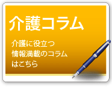
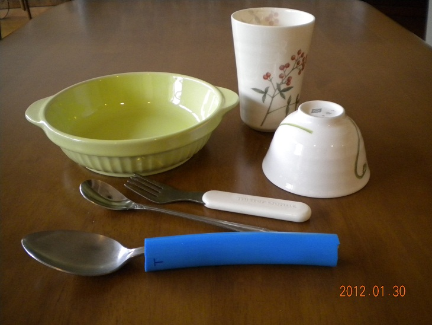
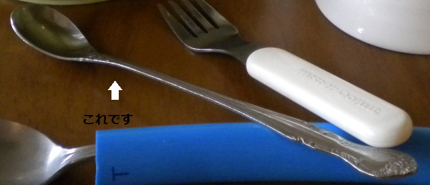

|

|
 |
 |
| 認知症介護の現場で働く方々から、とっておきの「プロ技」を教えてもらいました |
 |
～食事用具にちょっとの工夫を～
株式会社ケア･リンク
認知症の症状のある方の中には、そのきっかけとなる病気によって、運動機能の麻痺や年月がたつうちに手指の変形（拘縮）が現れ、ご自身で食事をするのに苦労をされている方も多いのではないでしょうか。
市販品の介助用品は便利で数多く出ていますが、ちょっと高価ですよね。
そこで、ひと工夫。
工夫①：ホース入り！スプーン・フォーク
手指の変形があったり、握力が弱くなってしまい、スプーン・フォークを使用されている方が持ちやすいのは、柄が太く軽いものです。
介助用のものはかなり太く作ってあります。
そこで手持ちのスプーン・フォークの柄を太くする方法を紹介します。
方法は簡単！ホースに差し込むだけです。

ホームセンターには色々な太さの切り売りのホースが販売されていますので、普段使用されている使い慣れたスプーンやフォークを持参し、ぴったりと差し込める太さのものを見つけてください。
はずして洗え、消毒もできますので、衛生的です。
工夫②：パフェ用スプーンの意外な効用
うまく持てないないだけでなく、適当な量が判断できなかいために、たくさんすくってしまい、呑みこみ切れないような食べ方をされる方があります。
カレースプーンのような大きいものではなく、パフェスプーンのような柄は長く、先の小さいものに変えると必然的に量が減りますので「入れすぎ」はなくなります。
100円均一ショップにも販売されています

顔面に麻痺があり唇が閉じ切れない方にはできるだけ平たい形状のものを選びましょう。
乳幼児用のもので柄の長めのものは安価で入手しやすいでしょう。
先ほど紹介したホースで柄を太くするにもピッタリです
介助をされる際には、顔に麻痺のある方には、麻痺のない側に食事を運んでください。
頬の中にたまってしまうことや、誤嚥を予防する第一歩です
工夫③：飲みこぼしを防ぐコップ・湯のみ
高齢になると顎を上げてのむことが難しくなってきます。そのために口角からもれ出てしまいます。
だからと言って、いきなりストロー付コップにするのもいかがなものでしょう。
飲み口がラッパ型になっているものを使用すれば、口に入る角度が変わりますので、のみこぼしが少なくなります。
(上記の写真をご覧下さい)
工夫④：食事がこぼれにくい食器とは
一般的な食器は角に丸みがあるため、箸でもスプーンでも端からこぼれやすくなります
角が立っている形のもの・・・グラタンやドリア皿などのオーブン用の食器は角があり、重みもあるので、安定性があり使用しやすいかと思います
(上記の写真をご覧下さい)
自分で食事を取れば･･･脳機能への影響
ご自身で食事をしていただくことは目で物を見、認識して道具を使用して口に運ぶことです。それには脳機能が絶対的に必要です。
人間は生まれたときから、口に何かが当たれば口を開けるという本能的な能力があります。介助により食事を摂るということは目で認識しづらく、口の場所に物を運ぶという脳の中の工程が省かれる分、脳への刺激がないということです。
時間が掛かることもありますが、少しでもご自身で食べることは大切なことです。
用具の工夫によってその機能を保つことができたらと願っています。
（2012年2月2日 株式会社ケア・リンクにより執筆）
（このコラムについてのご感想や、認知症の方の食事器具についてのご質問は、「こちら」の掲示板で）
|
～「盗った」と訴えるのはなぜ？こんなにお世話しているのに･･･ ～
株式会社ケア･リンク
高齢者ご本人が、どこかに片付けているはずなのに、「○○さんが盗った」「△△さんが隠した」と強く訴え、日ごろお世話をしているご家族や介護スタッフが辛い思いをすることがあります。
介護の世界の言葉で表現すると「物盗られ妄想」といいます。
物盗られ妄想･･･実際は
本当に盗られたり、隠されてしまったのでしょうか？そうではないはずです。
訴えている本人の能力として、物を移動させたり、片付けたりするだけの能力と動作するだけの体力があるのですから、ご自身で片付けられた場所を完全に忘れてしまった･･･というのが実情です。
「盗った」という矛先は、なぜか、一番お世話をしているお嫁さん、娘さん、担当ヘルパーや介護スタッフに向く傾向があります。
そして、訴える先は主介護者ほど密接ではないご家族・ご親族が多いようです。
さらに、訴えを聞かれた方がご本人の認知症の進み具合を理解されていなければ、一緒になって責められ、本当に辛い状況になってしまいます。
どのように対処すればよいのか
「盗った」「隠した」という訴えに備えて、日ごろから財布・通帳・印鑑・その他のご本人が大切にしている物の片付け場所を把握しておきましょう。
ご自分から仕舞い場所を告げる方はいいのですが、おっしゃらない方の場合には、施設でも、スタッフは普段のご様子からどこに片付けられるのか把握するようにしています。
そして、面と向かって「盗ったでしょ」と言われたときには、カッとならずに、落ち着いて対処することが大切です。
まずは一緒に探すこと。
探している中で介護者が見つけたときには、あえて本人が見つけられるように仕向けると良いことがあります。
ご自身で見つけられたことに喜びと安心感がありますので、「あって良かったですね」と一緒に喜んであげてください。
一番身近な人が対象になるのはなぜ
ご本人は、自分にとって一番身近な人が「盗った」「隠した」と本当に思っておられるのでしょうか。
自分が片付けたのに、どうしても見つからない。わからない。財布のありかすらもわからないことを自分の大切な人に知られたくはない。
そんなご自身のプライドともいえる部分が「盗った」「隠した」という言葉として出てしまうのではないでしょうか。
この人なら在り処を知っているかもしれない。そんな潜在的な気持ちが言わせているのでは･･･と思うのです。
物盗られ妄想の変化
「盗られた」物も認知症の進行と共に変化していきます。
はじめは、万人にとって必要なお金・財布・通帳・印鑑などですが、下着・入れ歯など他人が貰っても仕方がないような物に変化していくように思います。
仕舞う場所も、たんすや押入れの中だけではなく、ゴミ箱の中や新聞紙の間など様々です。
経験した中で一番驚いたのは、ゴミ箱のお菓子の小袋の中に数万円がたたんで入っていたことです。
頻繁に探し物をする姿を見かけるようになったら、ゴミ箱のごみを集める際には介護者側の注意も必要かと思います。
介護者への理解
物取られ妄想は、残念なことですが認知症の進行と共に消失していくように思います。
それは、自分の持ち物であるかどうかの記憶がなくなっていくためと考えられます。
主介護者に矛先が向けられている間は、本当に辛いことですが、ご本人との信頼関係が深いのだと理解して過ごしてみてください。
また、ご本人から○○さんが盗ったと聞かされた方は、ご本人の話にうなずきながらも、疑いを掛けられている介護者の方への理解を示してあげてください。
一生懸命お世話をしている自負心があるからこそ、認知症の進行の中でも「物取られ妄想」はとても、とても辛いのです。
（2012年1月16日 株式会社ケア・リンクにより執筆）
（このコラムについてのご感想や、ご質問は、こちらの掲示板で）
|
| 重度の認知症の方の『ふるさと』に帰りたいという想い |
～隠れたメッセージを見逃さないで～
株式会社ケア･リンク
認知症の方は、その症状の進行とともにコミュニケーションをはかることが難しくなり、在宅でも施設でも行動範囲は狭くなり、限られた環境のなかで過ごすことが多くなります。
ご自身の「想い」をうまく伝えられない認知症の方を目の前にして、自分に何ができるだろうかと思いめぐらすことはないでしょうか。
「里帰りをしたい」という隠れたメッセージ
あるグループホームに、要介護５、重度の認知症で意思疎通も困難である９０歳の女性(S様）が入居されています。その方は、故郷の地名「Ｈ島」を度々発せられていました。
それを聴いたスタッフは、「きっとお元気なら故郷に帰られたいだろうなぁ」と感じ、離島のＨ島への里帰りが実現できないだろうかと考えました。
とはいえ、Ｈ島には既にご家族も住んでおられず、車椅子生活のS様が安全に安心して「ふるさと」に帰省するためには、ご家族のご理解と協力、介護スタッフの確保、移動の車や船内での過し方、宿泊先の確保など念入りな計画と準備が必要でした。
ご家族は、里帰り旅行を提案した当初は「何故わざわざ帰る必要があるのか？ 帰っても分からないだろう・・」と不安感を示されていましたが、S様の想いと私たちの主旨を説明するとご理解くださり、一泊旅行に同意、Ｈ島で合流する事になりました。
里帰り中に現れた大きな変化
当日、S様は、島に向かうフェリーの中では日頃感じない揺れの影響もあり不穏状態にもなられましたが、ご家族が先に着いて待って下さっていた島の実家に着くと、急に「ここじゃ、ここじゃ･･･」と期待以上の反応を表され、ご家族の表情も不安から喜びに変わって行きました。
その夜には、親戚や近所の方、幼馴染の方など懐かしい方々が旅館に尋ねて来られ「よう帰ったなぁ」「もう会えんと思うちょった」と口々に声を掛けてくださいました。
２０人目ほどの面会者とお会いした際には、なんとその方を見るなり「○○ちゃん」と名前を言い当てられ、ご家族も周囲の方も驚くと共に大変喜ばれました。
施設では食事摂取も困難となっておられたS様ですが、故郷での懐かしく温かい雰囲気の中で、好物のＨ島名産の車海老を他の人の分まで召し上がられるなど、施設ではみられないご様子にスタッフも驚くばかりでした。
一度の里帰りが症状を大きく改善
３年前に始まった里帰り旅行は、ご家族、ご親戚、ご近所の方、旅館の方の理解と協力を頂き、現在も毎年実施しています。
ご高齢で重度の障害があるため故郷に帰るのは難しく「もう会えないだろう」とあきらめていたであろうS様が、会いたかった方々と再会でき、海の匂いや風景に触れ、懐かしい故郷の食材を味わうことで、低下していた機能が改善され、表情も豊かになり語彙が増える等、予想以上の変化もみられる様になりました。
コミュニケーションが困難なS様が発された『Ｈ島』の言葉にメッセージを感じ取り、私たちが大切にしている「パーソナルケア」を実践した現場スタッフの介護の力がS様の『生きる力』を蘇らせたのではと思われます。
その後もはぴねでの生活の中で摂食状態が低下してこられた時は、故郷のＨ島での食欲を思い出し、好物のお刺身を提供して摂食状態の回復に努めたり、里帰り効果を日々の介護の中にも取り入れる工夫を続けています。
「想い」に心を寄せて ～ メッセージを見逃さずに
重度の認知症の方の旅行は、プロのケアスタッフであっても、かなりの負担、重労働となります。決して自分たちだけではなく、ご家族をはじめ様々な方の理解と協力があってはじめて実行できます。
皆様が認知症のご家族のために何かしてさしあげたいと思われるならば、決して大きな事をやってみようと無理をなさらないでください。
まずは、ご本人の想いをきいてみること、感じ取ることです。
認知症で意思疎通が困難となられているならば、日頃の様子を注意深く観察することから始めてみてはいかがでしょうか。表される言葉や態度には意味があります。そのメッセージを見逃さず、どうすれば実現ができるかを考えることが、その方の想いに寄り添うこと、その人らしく生きることへのお手伝いにつながると思います。
そしてその想いを叶えようとする時、様々な資源を活用しましょう。一人では出来なくても周りには沢山の援助の手があります。担当のケアマネージャーにどの様な支援が受けられるか相談してみると良いでしょう。想いを実現するために…。
（2011年12月20日 株式会社ケア・リンクにより執筆）
（このコラムについてのご感想や、介護旅行についてご質問は、こちらの掲示板で）
|
～「気持ち悪い」の原因を探る～
株式会社ケア･リンク
皆さんは、認知症のご家族が、オムツやリハビリパンツを意図的に脱いでしまうことに、悩まれたことはないでしょうか。
「はぴね」で実際にあったことをお話しします。認知症がかなり進行した男性が、「はぴね」に入居していました。トイレに排泄の介助のために一緒に行き、リハビリパンツを上に引き上げたところ、またご自身で下げられました。どうしてと伺ってみましたら「ゆるめがいい」と言われました。
また、夜にリハビリパンツとパットで過ごされる別の方は、濡れる前に陰茎をオムツの外に出してしまうことが何回もありました。
どうしたらいいのだろうと、考えてみました。その原因として、「濡れて気持ちが悪い」、「陰部の収まり具合が悪い」、「汚れて気持ちが悪い」、「オムツやパット自体が嫌い」、「オムツやパットの当て方が悪い」といったご利用者様の気持ちがあるのではないかと考え、「はぴね」の21施設の介護職員へアンケートを行ない、ヒントをもらう事にしました。
【結果】
１．オムツをはずされてしまう経験がある方は、7割。
２．オムツをはずすことに男女差を感じる経験をされた方は、5割ほどで特に男性職員が多い。「男女差」の内容としては、全員が「男性の方がオムツはずしが多い」との意見だった。
以上の結果から、男性には下着の種類も多様で、はきごごちに対して女性とは違ったこだわりがあるのではないかと考えました。陰茎には“収まり位置”があるのではないか･･･と検討を重ねていき、男性職員だけに、「自分が他の人に排泄ケアをしてもらう立場になった時、オムツのはき具合が自分の好みと違っていたらどうでしょうか？」とさらにヒアリングを行なってみました。
その結果として、「他人に排泄ケアをされたり、オムツをはくこと自体に違和感がある」、「はき心地がおかしい時には、オムツやパットを自分で直せないので、オムツごとはずしてしまうかもしれない」、「オムツやパットは、自分でもおそらく、嫌がってはずすと思う」といった声が挙がってきました。さらには、（尿がオムツからあふれ漏れることを防ぐために、介護施設ではよく行なわれることですが）「パットで陰茎を巻き込むことはやめて欲しい」、「陰茎をパットで三角に包んで、さらに陰茎を下にむけてオムツをすることはやめてほしい」と意見が出てきました。
以上の意見を参考に、私たちはオムツの使い方を全面的に見直すことにしました。例えば、「ゆるめがいい」といわれた方の場合は、陰茎を三角に包ませていたパットで、睾丸まで含めて包み、その上からゆったりとオムツで押さえるようにしたところ、不快感がだいぶ軽減されたようで、オムツをはずしてしまうことがなくなりました。「濡れる前に陰茎を出す」癖のある方には、陰茎をパットでグルグル巻きにすることを止め、両面吸収できるパットを添えてし、上向きにした陰茎に乗せてオムツをするだけにしました。そして「オムツはずし」は、軽減されました。
私どもの介護の現場では、女性が多く「漏れないように」という視点での排泄のケアを行なってしまいがちでありましたが、男性職員の視点を取り入れることで、「心地いい｣ケアは、どのようにしたらいいかと考えるようになりました。
「パットの端に丸い穴を開けて、陰茎を入れるのをやめてみる」「ビニール面のない両面吸収のパットを使用してみる」「上に向けて寝ている時は、その方向に陰茎を向ける」「かつてはステテコやふんどしを着用していたので緩めにしてみる」などの対応方法が次々と出てきました。
では逆に、女性特有の「オムツ」に関する問題もあるのでしょうか。私たちの施設に入居していた、認知症の女性の場合です。一日に何度も（特に夜に）オムツをはずしてしまうことに、私たちは頭を悩ませていました。陰部に赤みはないのですが、ひょっとしたら『接触性皮膚炎』のために「かゆみ」があり、オムツ内に手を入れてパットを取っているのではないかと、私たちは考えました。
そこで医師に相談し、アレルギーの薬を服薬することで、オムツに手を入れるなどが無くなり、この女性も安眠できるようになりました。
以上のことから、『オムツはずし』を『認知症の周辺症状』としてのみ捉えず、その方の癖や好みや習慣や時代の背景などを全体的に考えていくことを大切にして｢心地いい」ケアをしていく事が大切であるという結論に、改めてたどり着きました。
もし皆様のご家族が認知症で、オムツを外してしまうことに悩まれていたら、「なぜオムツを外そうとするのか」を考えてみていただきたいと思います。ひょっとしたらそれが、解決策につながるかもしれません。
（認知症ねっと管理人より）
これから少しずつ、認知症介護の「プロ技」をご紹介していきたいと思います。どうぞお楽しみに！
|
|